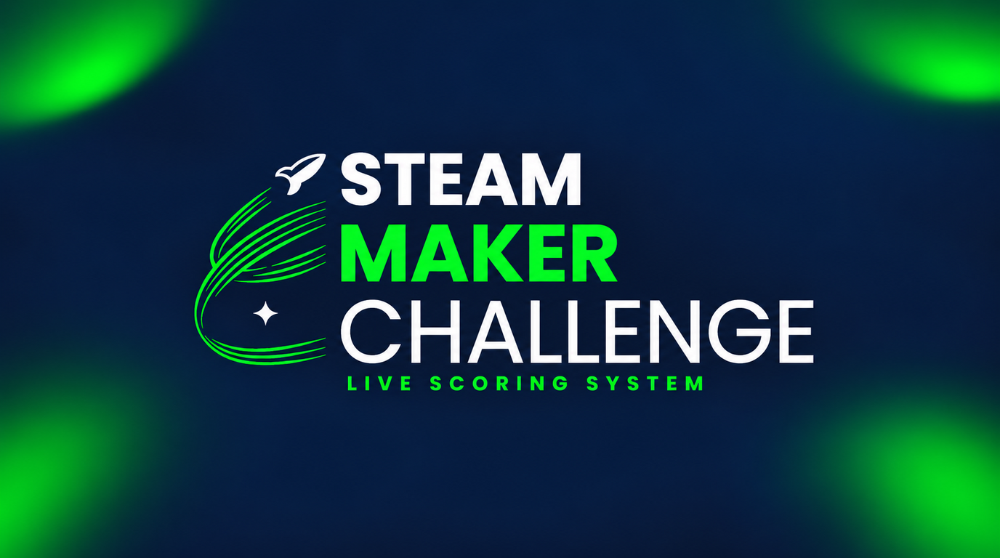

Desarrollo Backend PHP & Laravel
Construcción de aplicaciones web robustas bajo arquitectura MVC, optimización de consultas SQL y creación de APIs seguras y escalables.
ConsultarTécnico e ingeniero en formación en Ciencias de la Computación. Desarrollo sistemas institucionales, optimizo procesos y coordino proyectos tecnológicos desde la idea inicial hasta su despliegue en producción.

Perfil Profesional
Cuento con experiencia comprobada en desarrollo de software, liderazgo técnico y coordinación de equipos. Me especializo en traducir requerimientos de negocio en soluciones digitales robustas, automatizar procesos manuales y facilitar la comunicación directa entre equipos técnicos y usuarios finales.
He participado activamente en proyectos institucionales clave como la plataforma STEAM Maker Challenge Live Scoring System y en iniciativas tecnológicas de alcance regional vinculadas a competencias como FIRST Global Challenge y FTC.
Especialidades
Soluciones integrales de desarrollo de software orientadas a resultados institucionales y comerciales.
Construcción de aplicaciones web robustas bajo arquitectura MVC, optimización de consultas SQL y creación de APIs seguras y escalables.
ConsultarDiseño e implementación de plataformas web en tiempo real con rúbricas digitales de evaluación para jueces y tableros en vivo para eventos.
ConsultarDesarrollo de portales de comercio electrónico con gestión de catálogo de productos, inventario en tiempo real, carritos y ventas.
ConsultarModelado relacional, estructuración de esquemas, procedimientos almacenados y optimización de datos en MySQL y SQL Server.
ConsultarCoordinación de equipos técnicos, onboarding de desarrolladores pasantes y cumplimiento continuo de objetivos organizacionales (POA & OKRs).
ConsultarDesarrollo de herramientas internas para medición de clima laboral, reportería automática en Excel y simplificación de procesos administrativos.
ConsultarTrabajo Seleccionado
Una selección de sistemas desarrollados con un alto estándar técnico y funcionalidad práctica.

Plataforma web en tiempo real diseñada para administrar competencias tecnológicas y de robótica. Permite a los jueces evaluar equipos mediante rúbricas digitales institucionales, calculando puntajes instantáneamente y transmitiendo la tabla de posiciones en vivo para organizadores y espectadores.


Sistema de encuestas dinámicas para medir el clima organizacional y visualizar tendencias mediante reportes y gráficos dinámicos.


Experiencia & Educación
Universidad Don Bosco
Universidad Don Bosco
Colegio Don Bosco